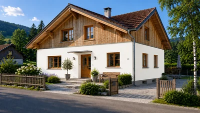
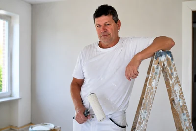

Meisterbetrieb
Qualität vom Fachmann

Malermeister Andreas Herzog
Hochwertige Malerarbeiten, kreative Gestaltung und perfekte Oberflächen – für ein Zuhause zum Wohlfühlen.
In Garmisch-Partenkirchen und Umgebung
Rückmeldung meist innerhalb von 24 Stunden.
Meisterbetrieb
Qualität vom Fachmann
Kreativ & individuell
Maßgeschneiderte Lösungen
Sauber & zuverlässig
Ordentlich. Pünktlich. Fair.
Regional vor Ort
Für Sie in der Region
Meine Leistungen
Ich biete Ihnen saubere, langlebige und optisch hochwertige Malerarbeiten für Privat- und Gewerbeobjekte.
Gleichmäßige Wand- und Deckenanstriche für ein frisches, harmonisches Raumgefühl.
Witterungsbeständige Beschichtungen, die Ihre Fassade schützen und dauerhaft aufwerten.
Durchdachte Renovierungslösungen von der Planung bis zur sauberen, termingerechten Umsetzung.
Präzises Tapezieren von klassisch bis modern mit sauberem Kantenbild und stimmigem Ergebnis.
Glatte und tragfähige Untergründe als perfekte Basis für hochwertige Endbeschichtungen.
Langlebige Lackierungen von Türen, Zargen und Bauteilen mit präzisem Finish.
Sie zeigen, wie Farben und Oberflächen Räume verändern können.
Beispielhafte Visualisierungen – keine echten Kundenreferenzen. Sie zeigen, wie Farben und Oberflächen Räume verändern können.
1. Wandfarbe wählen
Sehen Sie, wie unterschiedliche Wandfarben die Raumwirkung verändern.

Farbton wählen
Klassisches Weiß
Klar, hell und zeitlos – ideal für ruhige, offene Räume.
2. Gestaltungsideen mit Ihrer Farbe
Entdecken Sie, wie sich die gewählte Farbe als Akzentwand, halbhohe Gestaltung oder ruhiger Ton-in-Ton-Look einsetzen lässt.
Eine gezielte Akzentfläche lenkt den Blick und setzt Möbel oder Architektur bewusst in Szene.
Diese Gestaltung kann auch in Ihrem Raum umgesetzt werden.
Beratung anfragenDie Wand wird horizontal geteilt – modern, ruhig und strukturiert.
Diese Gestaltung kann auch in Ihrem Raum umgesetzt werden.
Beratung anfragenMehrere Abstufungen einer Farbe sorgen für ein ruhiges, hochwertiges Gesamtbild.
Diese Gestaltung kann auch in Ihrem Raum umgesetzt werden.
Beratung anfragenEin durchgehender Farbton schafft ein harmonisches, ruhiges und modernes Raumgefühl.
Diese Gestaltung kann auch in Ihrem Raum umgesetzt werden.
Beratung anfragenVertikale Farbfelder können den Raum optisch strecken und klar zonieren.
Diese Gestaltung kann auch in Ihrem Raum umgesetzt werden.
Beratung anfragenEin farbiges unteres Drittel schafft Tiefe, schützt die Wand und setzt den Raum elegant ab.
Diese Gestaltung kann auch in Ihrem Raum umgesetzt werden.
Beratung anfragen1. Haus und Fassadenfarbe wählen
Wählen Sie einen Haustyp und sehen Sie, wie unterschiedliche Fassadenfarben die Wirkung Ihres Gebäudes verändern.

Visualisierung folgt
Haustyp wählen
Fassadenfarbe wählen
Klassisches Weiß
Helle Fassaden wirken freundlich und zeitlos – besonders schön an traditionellen Gebäuden.
Visualisierungen für diesen Haustyp folgen in Kürze.
Über mich
Als traditioneller Meisterbetrieb stehe ich für saubere Arbeit, persönliche Beratung und zuverlässige Ausführung. Regional in Garmisch-Partenkirchen und Umgebung bin ich persönlich für Sie da.
Als Ein-Mann-Meisterbetrieb haben Sie immer denselben Ansprechpartner – von der Besichtigung bis zum letzten Pinselstrich.

Malerarbeiten in Garmisch-Partenkirchen, Grainau, Farchant, Oberau, Mittenwald und Umgebung.
Kontakt
Telefon: +49 171 1968368
E-Mail: info@malermeister-herzog.de
Ort: Garmisch-Partenkirchen und Umgebung